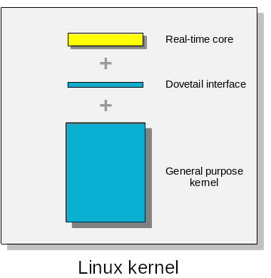
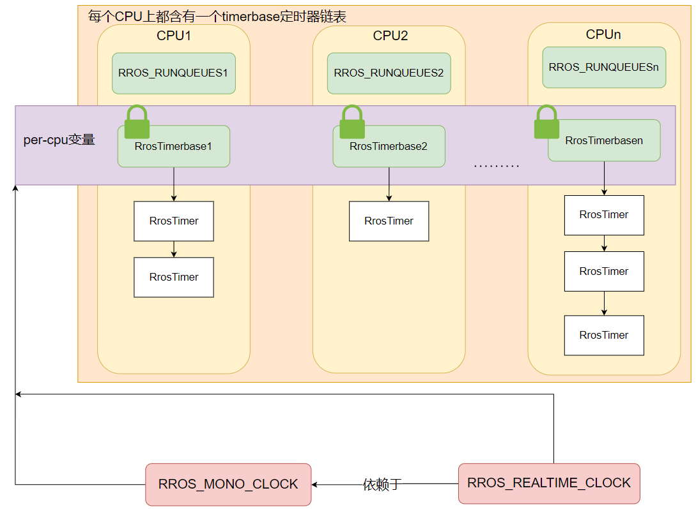
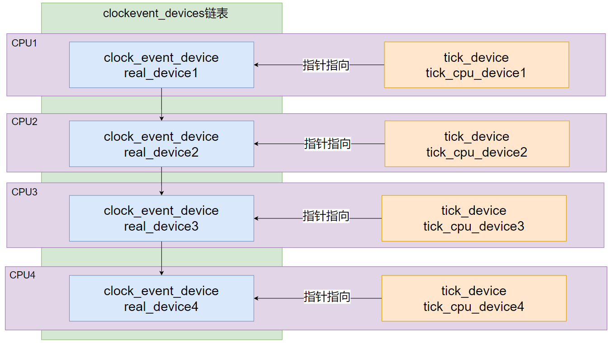
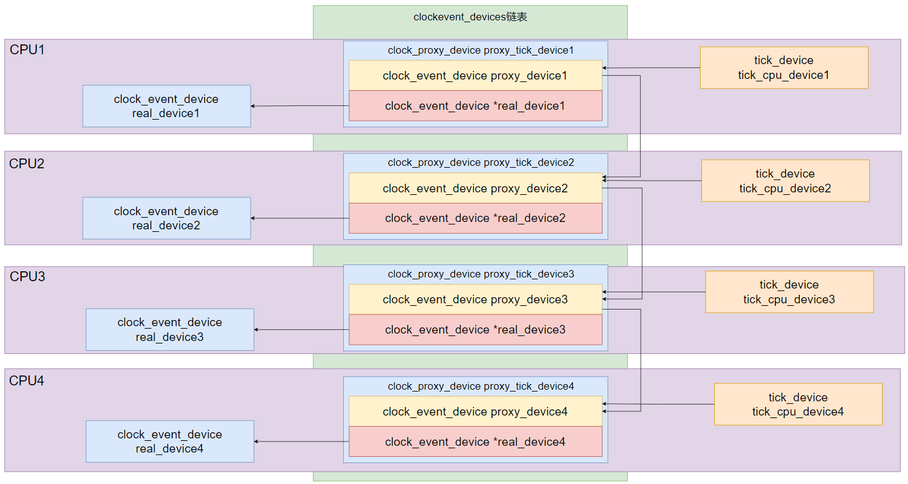
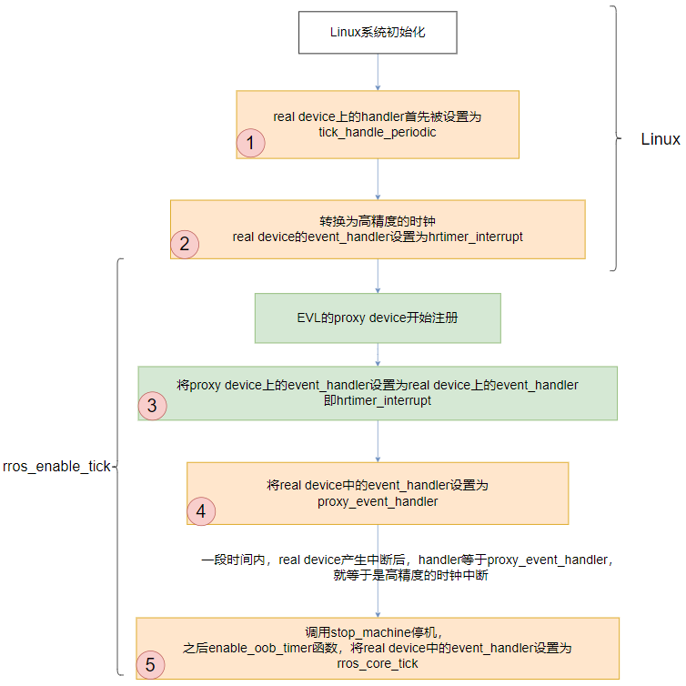
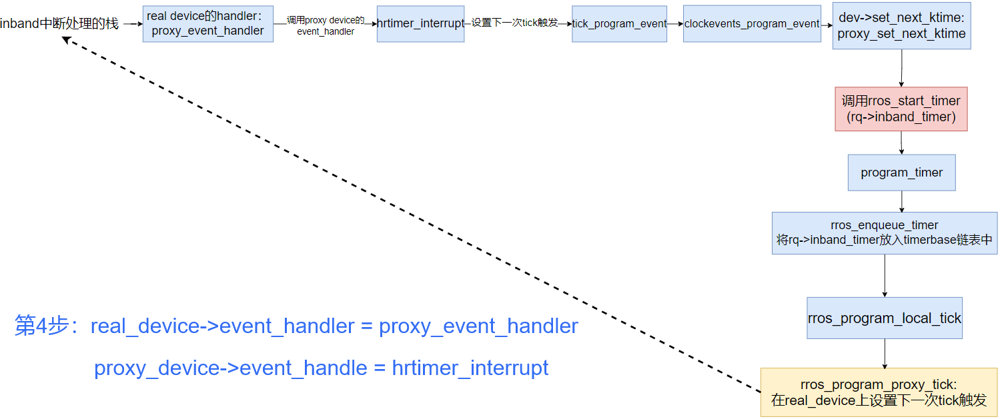
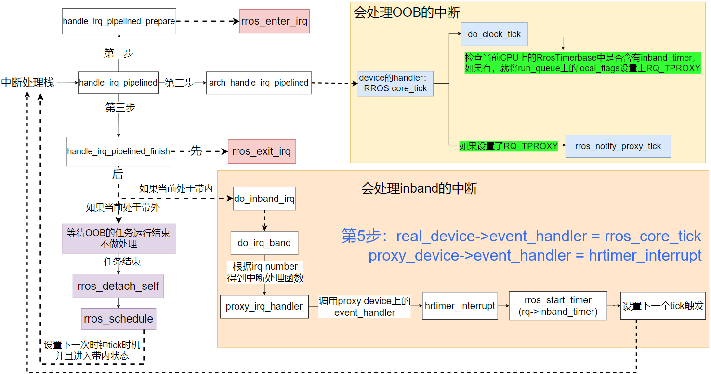
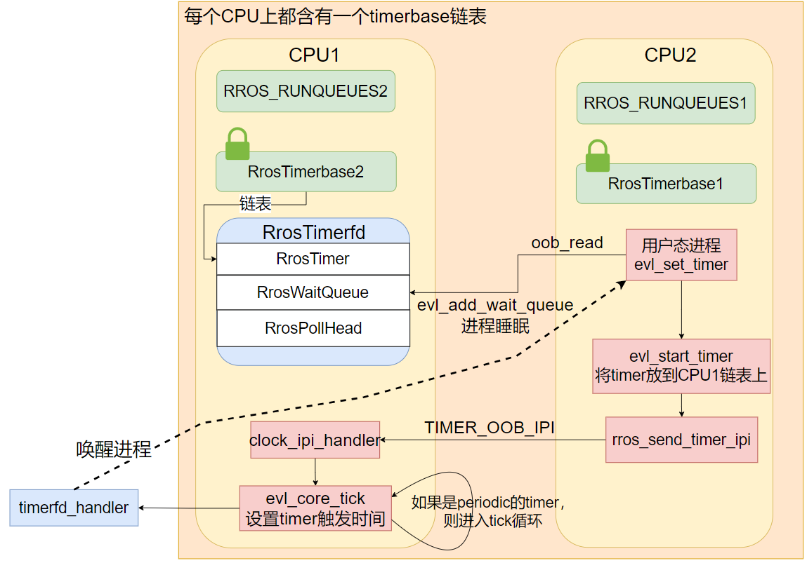
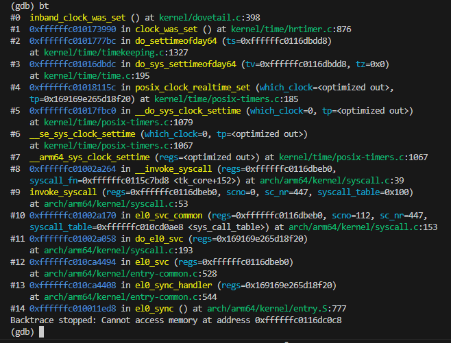
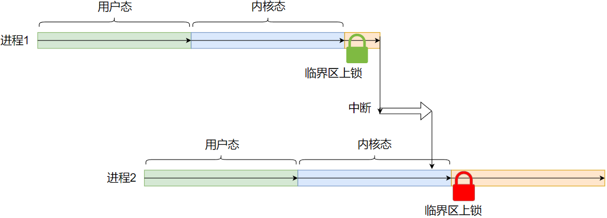

RROS 是一个双内核实时操作系统，由实时内核（使用 Rust 编写）和通用内核（Linux）组成，
能够提供硬实时的能力，目前正在作为在轨卫星载荷的操作系统进行实验。
SMP 是 Symmetric Multi Processing 对称多处理系统的简称，内含许多紧耦合的多处理器，所有的 CPU 共享全部资源（比如总线、内存、I/O 系统等），
最大的特点就是多个 CPU 之间没有区别，地位平等，具体可以参考 these books。
本文主要介绍 RROS 中实时内核的 SMP 机制，主要从以下几个方面来进行一个大致的总结。
由于 RROS 在设计上很大程度上受益于 The EVL core :: Xenomai4，并且目前 RROS 的功能并不完整、尚在内部开发， 因此下文中的部分代码分析会包含有 EVL core 的代码。
为了后续内容的展开，首先介绍在 RROS 实时内核中时钟子系统常用的数据结构。
// 三个超参数，定义系统响应时钟时间的基本时延
pub struct RrosClockGravity {
irq: KtimeT,
kernel: KtimeT,
user: KtimeT,
}// 实时内核中的时钟定义
pub struct RrosClock {
resolution: KtimeT, // clock 的精度，单位为纳秒
gravity: RrosClockGravity, // 三个超参数，表示系统响应时钟时间的基本时延
name: &'static CStr, // clock 的名称
flags: i32,
ops: RrosClockOps, // 时钟支持的操作
timerdata: *mut RrosTimerbase, // 在进行时钟初始化时会通过 alloc_percpu 在每个 CPU 分配 RrosTimerbase，用来连接依附于该时钟的所有的定时器
master: *mut RrosClock, // 当前时钟所依赖的时钟，RROS_REALTIME_CLOCK 依赖于 RROS_MONO_CLOCK，在对时钟进行校对的时候就是根据 master 指向的时钟进行校对的
offset: KtimeT, // 当前时钟和 master 时钟之间的时间差值
next: *mut ListHead, // 所有的时钟都会通过全局链表clock_list连接
element: Option<Rc<RefCell<RrosElement>>>,
dispose: Option<fn(&mut RrosClock)>,
#[cfg(CONFIG_SMP)]
pub affinity: Option<cpumask::CpumaskT>, // 时钟的 CPU 亲和性
}// 串联一个 CPU 上的所有的定时器
// 该链表上的定时器会按照被触发的时间递增的顺序维护，因此链表中第一个定时器就是下一次第一个应该被触发的定时器
pub struct RrosTimerbase {
pub lock: SpinLock<i32>, // 由于该变量是一个 per-cpu 的变量，所以所有的进程都可以直接访问，因此需要通过上锁访问
pub q: List<Arc<SpinLock<RrosTimer>>>, // 串联在该 CPU 上的所有定时器
}// 实时内核中的定时器
pub struct RrosTimer {
clock: *mut RrosClock, // 该定时器依赖的时钟
date: KtimeT, // 该定时器下次应该被触发的时间
status: i32,
pub interval: KtimeT, // 不等于0则表示定时器是周期性（periodic）的，值等于两次触发时间的间隔
pub start_date: KtimeT, // 定时器开始被开启的时间
pexpect_ticks: u64, // 定时器截止到当前时刻本应该被触发的次数
periodic_ticks: u64, // 定时器截止到当前时刻实际上被触发的次数，如果小于 pexpect_ticks，则进行调整
base: *mut RrosTimerbase, // 表示当前定时器所在的 CPU
handler: fn(*mut RrosTimer), // 定时器被触发时调用的处理函数，等于 timerfd_handler
name: &'static CStr, // 定时器的名称
#[cfg(CONFIG_RROS_RUNSTATS)]
scheduled: RrosCounter,
#[cfg(CONFIG_RROS_RUNSTATS)]
fired: RrosCounter,
#[cfg(CONFIG_SMP)]
rq: *mut RrosRq, // 表示当前定时器所在的 CPU
pub thread: Option<Arc<SpinLock<RrosThread>>>,
}// 遵循 Linux 中 Everything is a file 的哲学，RROS 实时内核中的每个定时器也都会对应一个文件，对定时器文件的操作就是对定时器的操作
pub struct RrosTimerFd {
timer: Arc<SpinLock<RrosTimer>>, // 定时器本身
readers: RrosWaitQueue, // 定时器尚未被触发，通过调用 oob_read 读取该定时器的进程就会被阻塞，被放到该队列上
poll_head: RrosPollHead, // 也是被当前定时器阻塞的进程
efile: RrosFile, // 和该定时器相关联的文件
ticked: bool, // 标志定时器是否已经被触发
}其次，在 RROS 双内核实时系统中对于一个任务的状态会有 in-band（带内） 和 out-of-band（OOB，带外） 两种定义。 "带" 的说法指的是 RROS 中的 dovetail，它通过实现中断虚拟化来为实时内核提供硬实时性， 图 1 就很形象地展示出了 "带" 的概念。

图1：RROS overview
系统启动过程中，通用内核会优先启动，其次实时内核会以 kernel module 的形式被加载，调用 /kernel/rros/init.rs 中的 init() 函数完成实时内核的初始化。 实时内核时钟子系统的初始化分为初始化时钟和初始化时钟中断两个主要步骤，rros_clock_init 函数就是用来初始化时钟。
// /kernel/rros/clock.rs
pub fn rros_clock_init() -> Result<usize> {
let pinned = unsafe { Pin::new_unchecked(&mut CLOCKLIST_LOCK) };
spinlock_init!(pinned, "CLOCKLIST_LOCK");
unsafe {
RROS_MONO_CLOCK.reset_gravity();
RROS_REALTIME_CLOCK.reset_gravity();
let mut element: RrosElement = RrosElement::new()?;
element.pointer = &mut RROS_MONO_CLOCK as *mut _ as *mut u8;
RROS_MONO_CLOCK.element = Some(Rc::try_new(RefCell::new(element)).unwrap());
let mut element: RrosElement = RrosElement::new()?;
element.pointer = &mut RROS_REALTIME_CLOCK as *mut _ as *mut u8;
RROS_REALTIME_CLOCK.element = Some(Rc::try_new(RefCell::new(element)).unwrap());
rros_init_clock(&mut RROS_MONO_CLOCK, &RROS_OOB_CPUS)?;
}
let ret = unsafe { rros_init_slave_clock(&mut RROS_REALTIME_CLOCK, &mut RROS_MONO_CLOCK) };
if let Err(_) = ret {
//rros_put_element(&rros_mono_clock.element);
}
// pr_debug!("clock init success!");
Ok(0)
}在 RROS 的实时内核中使用了两个时钟，分别是 RROS_MONO_CLOCK 和 RROS_REALTIME_CLOCK，进入函数后，首先会对两个时钟的 gravity 进行重置，定义系统处理时钟中断的基本时延，系统根据该值在设置时钟中断触发时刻时就会设置得靠前一些，减少实时内核的时延。 之后通过调用 rros_init_clock 函数来初始化 RROS_MONO_CLOCK，调用 rros_init_slave_clock 函数来初始化 RROS_REALTIME_CLOCK：
// /kernel/rros/clock.rs
fn rros_init_clock(clock: &mut RrosClock, affinity: &cpumask::CpumaskT) -> Result<usize> {
premmpt::running_inband()?;
#[cfg(CONFIG_SMP)]
{
if clock.affinity.is_none() {
clock.affinity = Some(cpumask::CpumaskT::from_int(0));
}
let clock_affinity = clock.affinity.as_mut().unwrap();
if affinity.cpumask_empty().is_ok() {
clock_affinity.cpumask_clear();
clock_affinity.cpumask_set_cpu(unsafe { RROS_OOB_CPUS.cpumask_first() as u32 });
} else {
clock_affinity.cpumask_and(affinity, unsafe { &RROS_OOB_CPUS });
if clock_affinity.cpumask_empty().is_ok() {
return Err(Error::EINVAL);
}
}
}
// 8 byte alignment
let tmb = percpu::alloc_per_cpu(
size_of::<RrosTimerbase>() as usize,
align_of::<RrosTimerbase>() as usize,
) as *mut RrosTimerbase;
if tmb == 0 as *mut RrosTimerbase {
return Err(kernel::Error::ENOMEM);
}
clock.timerdata = tmb;
for cpu in online_cpus() {
let mut tmb = rros_percpu_timers(clock, cpu as i32);
unsafe { raw_spin_lock_init(&mut (*tmb).lock); }
}
clock.offset = 0;
let ret = init_clock(clock as *mut RrosClock, clock as *mut RrosClock);
if let Err(_) = ret {
percpu::free_per_cpu(clock.get_timerdata_addr() as *mut u8);
return ret;
}
Ok(0)
}// /kernel/rros/clock.rs
fn init_clock(clock: *mut RrosClock, master: *mut RrosClock) -> Result<usize> {
// ... 省略
unsafe {
(*clock).master = master;
}
// ...省略
unsafe {
CLOCKLIST_LOCK.lock();
CLOCK_LIST.add_head(clock);
CLOCKLIST_LOCK.unlock();
}
// ...省略
}在函数 rros_init_clock 中，会首先对 MONO 时钟的 CPU 亲和性进行设置， 由于在初始化的时候亲和性掩码是空的，因此根据代码逻辑最终会被设置成为 RROS_OOB_CPUS。 然后就会在每个 CPU 上申请、初始化一个 per-cpu 的内存空间用来存储 RrosTimerbase， 并且将该内存的地址存放在时钟结构体内部的timerdata中。 最后在 init_clock 函数中完成剩余部分的初始化，比如将时钟放到全局链表 clock_list 上、 创建对应的 device、设置该时钟所依赖的 master 时钟（根据在 rros_init_clock 函数中的调用参数可以发现 MONO 时钟的 master 其实就是自己）等。
// /kernel/rros/clock.rs
fn rros_init_slave_clock(clock: &mut RrosClock, master: &mut RrosClock) -> Result<usize> {
premmpt::running_inband()?;
#[cfg(CONFIG_SMP)]
{
if master.affinity.is_none() {
master.affinity = Some(cpumask::CpumaskT::from_int(0));
}
if clock.affinity.is_none() {
clock.affinity = Some(cpumask::CpumaskT::from_int(0));
}
clock.affinity.as_mut().unwrap().cpumask_copy(master.affinity.as_ref().unwrap());
}
clock.timerdata = master.get_timerdata_addr();
clock.offset = clock.read() - master.read();
init_clock(clock as *mut RrosClock, master as *mut RrosClock)?;
Ok(0)
}MONO 时钟初始化结束后，进入 rros_init_slave_clock 函数初始化 REALTIME 时钟时， 会直接将 MONO 时钟的 CPU 亲和性掩码、timerdata复制过来， offset 则被设置为当前时刻 REALTIME 时钟和 MONO 时钟之间的差值， 所以从 REALTIME 时钟初始化的过程就可以看出，REALTIME 时钟是依赖于 MONO 时钟的。 最后，也会调用 init_clock 函数完成剩余部分的初始化，把该时钟放到全局链表 clock_list上、 设置 master（根据传入的参数可以发现，REALTIME 时钟的 master 其实就是 MONO 时钟）等。
以上就是实时内核时钟初始化的过程，图 2 展示了最终时钟子系统的大致结构。

图2：clock overview
tick 是系统中周期性产生的时钟中断，可以比作是 " OS 的心跳 "，驱动系统内部调度器的运转，为系统提供周期性的动力。
在实时内核中，tick 初始化是在其他子系统都已经初始化结束后才开始的， 在此之前实时内核只是作为一个 kernel module 进程在通用内核中被调度， 而在 tick 初始化时就会重新设置真实时钟硬件上的时钟中断处理函数，更改为实时内核自定义的函数， 并且会创建一个 proxy clock device（代理时钟设备）来协同实时内核和通用内核的时钟时钟处理， 最终的局面就会变成实时内核调度通用内核工作。
由于 tick 初始化的过程还是比较复杂的，所以此处主要从初始化过程中下面三个方面展开分析：
Here 有画 tick 初始化的大致流程， 如果感兴趣可以用 draw.io 打开看看
同样，为了后续内容的展开，先介绍相关的数据结构。
// /kernel/time/tick-sched.h
// 枚举时钟硬件设备的类型
enum tick_device_mode {
TICKDEV_MODE_PERIODIC, // 周期性产生时钟中断的设备
TICKDEV_MODE_ONESHOT, // 只产生一次时钟中断的设备，此类硬件设备会在被触发后继续设置下一次被触发的时间
};
// 用来组织 tick 子系统设备的信息
struct tick_device {
struct clock_event_device *evtdev; // 硬件时钟设备
enum tick_device_mode mode; // 标志时钟设备的类型
};// /include/linux/hrtimer.h
DECLARE_PER_CPU(struct tick_device, tick_cpu_device); // 在每个 CPU 上都存储本 CPU 上的时钟设备的信息
// /include/linux/clockchips.h
/**
* struct clock_event_device - clock event device descriptor
* @event_handler: Assigned by the framework to be called by the low
* level handler of the event source
* @set_next_event: set next event function using a clocksource delta
* @set_next_ktime: set next event function using a direct ktime value
* @next_event: local storage for the next event in oneshot mode
* @max_delta_ns: maximum delta value in ns
* @min_delta_ns: minimum delta value in ns
* @mult: nanosecond to cycles multiplier
* @shift: nanoseconds to cycles divisor (power of two)
* @state_use_accessors:current state of the device, assigned by the core code
* @features: features
* @retries: number of forced programming retries
* @set_state_periodic: switch state to periodic
* @set_state_oneshot: switch state to oneshot
* @set_state_oneshot_stopped: switch state to oneshot_stopped
* @set_state_shutdown: switch state to shutdown
* @tick_resume: resume clkevt device
* @broadcast: function to broadcast events
* @min_delta_ticks: minimum delta value in ticks stored for reconfiguration
* @max_delta_ticks: maximum delta value in ticks stored for reconfiguration
* @name: ptr to clock event name
* @rating: variable to rate clock event devices
* @irq: IRQ number (only for non CPU local devices, or pipelined timers)
* @bound_on: Bound on CPU
* @cpumask: cpumask to indicate for which CPUs this device works
* @list: list head for the management code
* @owner: module reference
*/
struct clock_event_device {
void (*event_handler)(struct clock_event_device *);
int (*set_next_event)(unsigned long evt, struct clock_event_device *);
int (*set_next_ktime)(ktime_t expires, struct clock_event_device *);
ktime_t next_event;
u64 max_delta_ns;
u64 min_delta_ns;
u32 mult;
u32 shift;
enum clock_event_state state_use_accessors;
unsigned int features;
unsigned long retries;
int (*set_state_periodic)(struct clock_event_device *);
int (*set_state_oneshot)(struct clock_event_device *);
int (*set_state_oneshot_stopped)(struct clock_event_device *);
int (*set_state_shutdown)(struct clock_event_device *);
int (*tick_resume)(struct clock_event_device *);
void (*broadcast)(const struct cpumask *mask);
void (*suspend)(struct clock_event_device *);
void (*resume)(struct clock_event_device *);
unsigned long min_delta_ticks;
unsigned long max_delta_ticks;
const char *name;
int rating;
int irq;
int bound_on;
const struct cpumask *cpumask;
struct list_head list;
struct module *owner;
} ____cacheline_aligned;// /include/linux/clockchips.h
// 实时内核中的代理设备结构，每个 CPU 上都会有一个 real_device，实时内核中会创建一个 proxy_device 与之对应协同完成时钟中断
struct clock_proxy_device {
struct clock_event_device proxy_device; // 代理设备本身
struct clock_event_device *real_device; // 该 CPU 上原本的真实设备
void (*handle_oob_event)(struct clock_event_device *dev); // 对于 OOB 中断事件的处理函数
void (*__setup_handler)(struct clock_proxy_device *dev); // 在注册 proxy device 时会调用该函数完成 proxy device 的初始化
void (*__original_handler)(struct clock_event_device *dev); // 备份 real device 上的中断处理函数
};// /kernel/time/tick-proxy.c
static unsigned int proxy_tick_irq; // 用来存储实时内核中的一个 interrupt number，后续会用到该全局变量
static DEFINE_PER_CPU(struct clock_proxy_device, proxy_tick_device); // 每个 CPU 都被注册的 proxy device// /kernel/evl/tick.c
static DEFINE_PER_CPU(struct clock_proxy_device *, proxy_device); // 指向每个 CPU 上被注册的 proxy device// /kernel/time/clockevents.c
/* The registered clock event devices */
static LIST_HEAD(clockevent_devices); // 用来串联所有正在使用的时钟设备
static LIST_HEAD(clockevents_released); // 串联已经不适用的时钟设备
/* Protection for the above */
static DEFINE_RAW_SPINLOCK(clockevents_lock); // 由于上面两个链表是全局变量，因此需要上锁访问
/* Protection for unbind operations */
static DEFINE_MUTEX(clockevents_mutex); // 由于上面两个链表是全局变量，因此需要上锁访问正如前面所说，在实时内核初始化 tick 之前，整个实时内核其实是以 kernel module 的形式在通用内核中调度的， 因此在调用 rros_enable_tick 函数前，所有的可编程硬件都是保持原状的，整体的结构大致如 图 3 所示： 每个 CPU 上都含有一个真实设备 real_device，所有的设备以链表的方式被串联在全局链表 clockevent_devices 上用来管理， 全局 per-cpu 变量 tick_cpu_device 中的指针指向该 CPU 上的真实设备，每次产生时钟中断都会访问该全局变量访问真实设备中的处理函数。

图3：tick origin overview
而在 rros_enable_tick 函数中会改变上述结构，结果如 图 4 所示： 每个 CPU 上的真实设备仍然存在，并且最底层仍然是通过 real device 编程时钟硬件， 而在其上层实时内核会申请一个 clock_proxy_device 的代理设备，创建出一个 proxy device， 并把全局 per-cpu 变量 tick_cpu_device 中的设备指针更改为指向 proxy device， 全局链表 clockevent_devices 上的设备也都被替换为了 proxy device。

图4：tick proxy overview
在对实时内核初始化之后 tick 整体的结构有了大概的了解之后， 就需要对 real device 和 proxy device 上中断处理函数的变化有所了解才可以明白中断处理的具体过程。 该变化也是在 rros_enable_tick 函数中经过一系列调用完成的。
首先，在调用 rros_enable_tick 之前，系统中完全是通用内核 Linux 管理的， Linux 首先会将 real device 设置成周期性的，handler 设置为 tick_handle_periodic， 而后续就会开启高精度的时钟，将 real device 设置成 oneshot 模式，handler设置为 hrtimer_interrupt。
// /kernel/evl/tick.c
int evl_enable_tick(void)
{
int ret;
/*
* We may be running a SMP kernel on a uniprocessor machine
* whose interrupt controller provides no IPI: attempt to hook
* the timer IPI only if the hardware can support multiple
* CPUs.
*/
if (IS_ENABLED(CONFIG_SMP) && num_possible_cpus() > 1) {
ret = __request_percpu_irq(TIMER_OOB_IPI,
clock_ipi_handler,
IRQF_OOB, "EVL timer IPI",
&evl_machine_cpudata);
if (ret)
return ret;
}
/*
* CAUTION:
*
* - EVL timers may be started only _after_ the proxy clock
* device has been set up for the target CPU.
*
* - do not hold any lock across calls to evl_enable_tick().
*
* - tick_install_proxy() guarantees that the real clock
* device supports oneshot mode, or fails.
*/
ret = tick_install_proxy(setup_proxy, &evl_oob_cpus);
if (ret && IS_ENABLED(CONFIG_SMP) && num_possible_cpus() > 1) {
free_percpu_irq(TIMER_OOB_IPI, &evl_machine_cpudata);
return ret;
}
return 0;
}// /kernel/time/tick-proxy.c
int tick_install_proxy(void (*setup_proxy)(struct clock_proxy_device *dev),
const struct cpumask *cpumask)
{
struct proxy_install_arg arg;
int ret, sirq;
mutex_lock(&proxy_mutex);
ret = -EAGAIN;
if (proxy_tick_irq)
goto out;
sirq = irq_create_direct_mapping(synthetic_irq_domain);
if (WARN_ON(sirq == 0))
goto out;
ret = __request_percpu_irq(sirq, proxy_irq_handler,
IRQF_NO_THREAD, /* no IRQF_TIMER here. */
"proxy tick",
&proxy_tick_device);
if (WARN_ON(ret)) {
irq_dispose_mapping(sirq);
goto out;
}
proxy_tick_irq = sirq;
barrier();
/*
* Install a proxy tick device on each CPU. As the proxy
* device is picked, the previous (real) tick device is
* switched to reserved state by the clockevent core.
* Immediately after, the proxy device starts controlling the
* real device under the hood to carry out the timing requests
* it receives.
*
* For a short period of time, after the proxy device is
* installed, and until the real device IRQ is switched to
* out-of-band mode, the flow is as follows:
*
* [inband timing request]
* proxy_dev->set_next_event(proxy_dev)
* oob_program_event(proxy_dev)
* real_dev->set_next_event(real_dev)
* ...
* <tick event>
* original_timer_handler() [in-band stage]
* clockevents_handle_event(real_dev)
* proxy_event_handler(real_dev)
* inband_event_handler(proxy_dev)
*
* Eventually, we substitute the original (in-band) clock
* event handler with the out-of-band handler for the real
* clock event device, then turn on out-of-band mode for the
* timer IRQ associated to the latter. These two steps are
* performed over a stop_machine() context, so that no tick
* can race with this code while we swap handlers.
*
* Once the hand over is complete, the flow is as follows:
*
* [inband timing request]
* proxy_dev->set_next_event(proxy_dev)
* oob_program_event(proxy_dev)
* real_dev->set_next_event(real_dev)
* ...
* <tick event>
* inband_event_handler() [out-of-band stage]
* clockevents_handle_event(real_dev)
* handle_oob_event(proxy_dev)
* ...(inband tick emulation)...
* tick_notify_proxy()
* ...
* proxy_irq_handler(proxy_dev) [in-band stage]
* clockevents_handle_event(proxy_dev)
* inband_event_handler(proxy_dev)
*/
arg.setup_proxy = setup_proxy;
arg.result = 0;
on_each_cpu_mask(cpumask, register_proxy_device, &arg, true);
if (arg.result) {
tick_uninstall_proxy(cpumask);
return arg.result;
}
/*
* Start ticking from the out-of-band interrupt stage upon
* receipt of out-of-band timer events.
*/
stop_machine(enable_oob_timer, NULL, cpumask);
out:
mutex_unlock(&proxy_mutex);
return ret;
}// /kernel/evl/tick.c
#ifdef CONFIG_SMP
static irqreturn_t clock_ipi_handler(int irq, void *dev_id)
{
evl_core_tick(NULL);
return IRQ_HANDLED;
}
#else
#define clock_ipi_handler NULL
#endif// /kernel/time/tick-proxy.c
static irqreturn_t proxy_irq_handler(int sirq, void *dev_id)
{
struct clock_event_device *evt;
/*
* Tricky: we may end up running this in-band IRQ handler
* because tick_notify_proxy() was posted either:
*
* - from the out-of-band stage via ->handle_oob_event() for
* emulating an in-band tick. In this case, the active tick
* device for the in-band timing core is the proxy device,
* whose event handler is still the same than the real tick
* device's.
*
* - directly by the clock chip driver on the local CPU via
* clockevents_handle_event(), for propagating a tick to the
* in-band stage nobody from the out-of-band stage is
* interested on i.e. no proxy device was registered on the
* receiving CPU, which was excluded from @cpumask in the call
* to tick_install_proxy(). In this case, the active tick
* device for the in-band timing core is a real clock event
* device.
*
* In both cases, we are running on the in-band stage, and we
* should fire the event handler of the currently active tick
* device for the in-band timing core.
*/
evt = raw_cpu_ptr(&tick_cpu_device)->evtdev;
evt->event_handler(evt);
return IRQ_HANDLED;
}之后，就进入到了 rros_enable_tick 中。 正如上面代码所示，实时内核会分别在 rros_enable_tick 和 tick_install_proxy 两个函数中率先申请两个中断信号：TIMER_OOB_IPI 和 proxy_tick_irq。 其中 TIMER_OOB_IPI 中断信号是一个核间中断，其处理函数定义为了 clock_ipi_handler，该函数内部调用的 evl_core_tick 函数就是实时内核的核心中断处理函数， 后续在 1.2.4. 节中会进行介绍。 而 proxy_tick_irq 在上文中也已经介绍，是一个全局变量，在 tick_install_proxy 函数运行时会将通过调用 irq_create_direct_mapping 函数申请得到的 interrupt number 存入该变量中，以便后续触发对应的中断，其处理函数定义为了 proxy_irq_handler，触发的过程会在 1.2.3. 节中介绍。
申请中断后，在后续的函数调用中，实时内核会开始创建、初始化 proxy device， 该过程中，real device 和 proxy device 上的中断处理函数变化过程如 图 5 所示。

图5：the change process of event_handler
// /kernel/time/tick-proxy.c
static void proxy_event_handler(struct clock_event_device *real_dev)
{
struct clock_proxy_device *dev = raw_cpu_ptr(&proxy_tick_device);
struct clock_event_device *proxy_dev = &dev->proxy_device;
proxy_dev->event_handler(proxy_dev);
}每一次device 上 event_handler 的变化最直接的结果就是引起时钟中断处理过程的变化，分析 图 5 中的过程：

图6：the process of handling irq after step 4
此处涉及到 dovetail 中断虚拟化的相关内容，可以参考 this video。
截止目前，一次 core_tick 的调用已经结束，但并不意味着中断处理程序的结束。在上层中断处理函数栈中，还会调用到 handle_irq_pipelined_finish 函数， 在该函数中就会对带内中断缓冲区中的记录做处理。此处需要考虑当前任务的状态是带内还是带外，分情况分析：

图7：the process of handling irq after step 5
// /kernel/time/tick-oneshot.c
/**
* tick_program_event
*/
int tick_program_event(ktime_t expires, int force)
{
struct clock_event_device *dev = __this_cpu_read(tick_cpu_device.evtdev);
if (unlikely(expires == KTIME_MAX)) {
/*
* We don't need the clock event device any more, stop it.
*/
clockevents_switch_state(dev, CLOCK_EVT_STATE_ONESHOT_STOPPED);
dev->next_event = KTIME_MAX;
return 0;
}
if (unlikely(clockevent_state_oneshot_stopped(dev))) {
/*
* We need the clock event again, configure it in ONESHOT mode
* before using it.
*/
clockevents_switch_state(dev, CLOCK_EVT_STATE_ONESHOT);
}
return clockevents_program_event(dev, expires, force);
}// /kernel/evl/tick.c
static int proxy_set_next_ktime(ktime_t expires,
struct clock_event_device *proxy_dev)
{
struct evl_rq *rq;
unsigned long flags;
ktime_t delta;
/*
* Negative delta have been observed. evl_start_timer()
* will trigger an immediate shot in such an event.
*/
delta = ktime_sub(expires, ktime_get());
flags = hard_local_irq_save(); /* Prevent CPU migration. */
rq = this_evl_rq();
evl_start_timer(&rq->inband_timer,
evl_abs_timeout(&rq->inband_timer, delta),
EVL_INFINITE);
hard_local_irq_restore(flags);
return 0;
}// /kernel/evl/timer.c
void evl_start_timer(struct evl_timer *timer,
ktime_t value, ktime_t interval)
{
struct evl_timerbase *base;
struct evl_tqueue *tq;
ktime_t date, gravity;
unsigned long flags;
trace_evl_timer_start(timer, value, interval);
base = lock_timer_base(timer, &flags);
tq = &base->q;
if ((timer->status & EVL_TIMER_DEQUEUED) == 0)
evl_dequeue_timer(timer, tq);
timer->status &= ~(EVL_TIMER_FIRED | EVL_TIMER_PERIODIC);
date = ktime_sub(value, timer->clock->offset);
/*
* To cope with the basic system latency, we apply a clock
* gravity value, which is the amount of time expressed in
* nanoseconds by which we should anticipate the shot for the
* timer. The gravity value varies with the type of context
* the timer wakes up, i.e. irq handler, kernel or user
* thread.
*/
gravity = evl_get_timer_gravity(timer);
evl_tdate(timer) = ktime_sub(date, gravity);
timer->interval = EVL_INFINITE;
if (!timeout_infinite(interval)) {
timer->interval = interval;
timer->start_date = value;
timer->pexpect_ticks = 0;
timer->periodic_ticks = 0;
timer->status |= EVL_TIMER_PERIODIC;
}
timer->status |= EVL_TIMER_RUNNING;
program_timer(timer, tq);
unlock_timer_base(base, flags);
}// /kernel/evl/timer.c
/* timer base locked. */
static void program_timer(struct evl_timer *timer,
struct evl_tqueue *tq)
{
struct evl_rq *rq;
evl_enqueue_timer(timer, tq);
rq = evl_get_timer_rq(timer);
if (!(rq->local_flags & RQ_TSTOPPED) && !timer_at_front(timer))
return;
if (rq != this_evl_rq())
evl_program_remote_tick(timer->clock, rq);
else
evl_program_local_tick(timer->clock);
}// /kernel/evl/clock.c
void evl_core_tick(struct clock_event_device *dummy) /* hard irqs off */
{
struct evl_rq *this_rq = this_evl_rq();
struct evl_timerbase *tmb;
if (EVL_WARN_ON_ONCE(CORE, !is_evl_cpu(evl_rq_cpu(this_rq))))
return;
tmb = evl_this_cpu_timers(&evl_mono_clock);
do_clock_tick(&evl_mono_clock, tmb);
/*
* If an EVL thread was preempted by this clock event, any
* transition to the in-band context will cause a pending
* in-band tick to be propagated by evl_schedule() called from
* evl_exit_irq(), so we may have to propagate the in-band
* tick immediately only if the in-band context was preempted.
*/
if ((this_rq->local_flags & RQ_TPROXY) && (this_rq->curr->state & T_ROOT))
evl_notify_proxy_tick(this_rq);
}// /kernel/evl/clock.c
/* hard irqs off */
static void do_clock_tick(struct evl_clock *clock, struct evl_timerbase *tmb)
{
struct evl_rq *rq = this_evl_rq();
struct evl_timer *timer;
struct evl_tqueue *tq;
struct evl_tnode *tn;
ktime_t now;
if (EVL_WARN_ON_ONCE(CORE, !hard_irqs_disabled()))
hard_local_irq_disable();
tq = &tmb->q;
raw_spin_lock(&tmb->lock);
/*
* Optimisation: any local timer reprogramming triggered by
* invoked timer handlers can wait until we leave this tick
* handler. This is a hint for the program_local_shot()
* handler of the ticking clock.
*/
rq->local_flags |= RQ_TIMER;
now = evl_read_clock(clock);
while ((tn = evl_get_tqueue_head(tq)) != NULL) {
timer = container_of(tn, struct evl_timer, node);
if (now < evl_tdate(timer))
break;
trace_evl_timer_expire(timer);
evl_dequeue_timer(timer, tq);
evl_account_timer_fired(timer);
timer->status |= EVL_TIMER_FIRED;
/*
* Propagating the proxy tick to the inband stage is a
* low priority task: postpone this until the very end
* of the core tick interrupt.
*/
if (unlikely(timer == &rq->inband_timer)) {
rq->local_flags |= RQ_TPROXY;
rq->local_flags &= ~RQ_TDEFER;
continue;
}
raw_spin_unlock(&tmb->lock);
timer->handler(timer);
now = evl_read_clock(clock);
raw_spin_lock(&tmb->lock);
if (timer_needs_enqueuing(timer)) {
do {
timer->periodic_ticks++;
evl_update_timer_date(timer);
} while (evl_tdate(timer) < now);
if (likely(evl_timer_on_rq(timer, rq)))
evl_enqueue_timer(timer, tq);
}
}
rq->local_flags &= ~RQ_TIMER;
evl_program_local_tick(clock);
raw_spin_unlock(&tmb->lock);
}// /include/evl/tick.h
/* hard IRQs off. */
static inline void evl_notify_proxy_tick(struct evl_rq *this_rq)
{
/*
* A proxy clock event device is active on this CPU, make it
* tick asap when the in-band code resumes; this will honour a
* previous set_next_ktime() request received from the kernel
* we have carried out using our core timing services.
*/
this_rq->local_flags &= ~RQ_TPROXY;
tick_notify_proxy();
}
// /kernel/time/tick-proxy.c
void tick_notify_proxy(void)
{
/*
* Schedule a tick on the proxy device to occur from the
* in-band stage, which will trigger proxy_irq_handler() at
* some point (i.e. when the in-band stage is back in control
* and not stalled). Note that we might be called from the
* in-band stage in some cases (see proxy_irq_handler()).
*/
irq_post_inband(proxy_tick_irq);
}// /kernel/irq/pipeline.c
/*
* sync_current_irq_stage() -- Flush the pending IRQs for the current
* stage (and processor). This routine flushes the interrupt log (see
* "Optimistic interrupt protection" from D. Stodolsky et al. for more
* on the deferred interrupt scheme). Every interrupt which has
* occurred while the pipeline was stalled gets played.
*
* CAUTION: CPU migration may occur over this routine if running over
* the inband stage.
*/
void sync_current_irq_stage(void) /* hard irqs off */
{
struct irq_stage_data *p;
struct irq_stage *stage;
struct irq_desc *desc;
int irq;
WARN_ON_ONCE(irq_pipeline_debug() && on_pipeline_entry());
check_hard_irqs_disabled();
p = current_irq_staged;
respin:
stage = p->stage;
if (stage == &inband_stage) {
/*
* Since we manipulate the stall bit directly, we have
* to open code the IRQ state tracing.
*/
stall_inband_nocheck();
trace_hardirqs_off();
} else {
stall_oob();
}
for (;;) {
irq = pull_next_irq(p);
if (irq < 0)
break;
/*
* Make sure the compiler does not reorder wrongly, so
* that all updates to maps are done before the
* handler gets called.
*/
barrier();
desc = irq_to_cached_desc(irq);
if (stage == &inband_stage) {
hard_local_irq_enable();
do_inband_irq(desc);
hard_local_irq_disable();
} else {
do_oob_irq(desc);
}
/*
* We might have switched from the oob stage to the
* in-band one on return from the handler, in which
* case we might also have migrated to a different CPU
* (the converse in-band -> oob switch is NOT allowed
* though). Reload the current per-cpu context
* pointer, so that we further pull pending interrupts
* from the proper in-band log.
*/
p = current_irq_staged;
if (p->stage != stage) {
if (WARN_ON_ONCE(irq_pipeline_debug() &&
stage == &inband_stage))
break;
goto respin;
}
}
if (stage == &inband_stage) {
trace_hardirqs_on();
unstall_inband_nocheck();
} else {
unstall_oob();
}
}系统从单核变为多核后，一个非常重要的机制是多核之间的通信，底层是通过 IPI（Inter-Processor Interrupt，核间中断）实现的。 在 RROS 实时内核中含有两种 IPI 信号：TIMER_OOB_IPI 和 RESCHEDULE_OOB_IPI，此处首先分析 TIMER_OOB_IPI 的机制， 后者会在 2.2. 节中分析。
TIMER_OOB_IPI 信号是服务于实时内核中提供的定时器服务，触发的根本原因是定时器和定时器所属的进程不在同一个 CPU 上， 在进程开启定时器时，就需要通过发送 TIMER_OOB_IPI 信号通知远程 CPU 打开定时器定时。 另一类触发时机是用户态程序通过调用 clock_settime 系统调用更改系统时间时， 每次更改结束都会重新将所有定时器的下一次触发时间进行修改， 修改后就会导致需要重新设置下一次时钟中断的触发，因此对于远程定时器来说也会通过 TIMER_OOB_IPI 信号完成通知。
首先分析定时器和定时器所属的进程不在同一个 CPU 上的原因。 在创建定时器时，用户会调用用户态程序接口 libevl 中提供的 evl_new_timer， 会在 MONO 时钟上产生 ioctl 系统调用，回调函数中根据传入的 EVL_CLKIOC_NEW_TIMER 参数最终调用到 new_timerfd 完成定时器的创建， 可以看到创建定时器实际上也创建了一个文件与之对应，体现了 " Everything is a file " 的设计哲学。 此处定时器本身是通过宏 evl_init_timer_on_rq 来完成的，底层调用了函数 __evl_init_timer， 定时器所在的 CPU 就是在此处选择的：由于传入的 rq 指针为 NULL，所以会直接选择第一个 OOB CPU（在系统启动的参数中会指定可以运行实时进程的 CPU，即 OOB CPU）， 因此就会出现定时器和进程不在同一个 CPU 上的现象。 （由于定时器和所属进程不在同一个 CPU 上的问题会导致进程开启定时器时钟会有一个 IPI 信号的传递时延，所以后面也会介绍 pin_timer 如何来避免这个问题。）
// libevl: /lib/timer.c
int evl_new_timer(int clockfd)
{
int ret, efd;
if (evl_mono_clockfd < 0)
return -ENXIO;
if (clockfd == EVL_CLOCK_MONOTONIC)
clockfd = evl_mono_clockfd;
else if (clockfd == EVL_CLOCK_REALTIME)
clockfd = evl_real_clockfd;
ret = ioctl(clockfd, EVL_CLKIOC_NEW_TIMER, &efd);
if (ret)
return -errno;
return efd;
}// /kernel/evl/clock.c
static int new_timerfd(struct evl_clock *clock)
{
struct evl_timerfd *timerfd;
struct file *filp;
int ret, fd;
timerfd = kzalloc(sizeof(*timerfd), GFP_KERNEL);
if (timerfd == NULL)
return -ENOMEM;
filp = anon_inode_getfile("[evl-timerfd]", &timerfd_fops,
timerfd, O_RDWR|O_CLOEXEC);
if (IS_ERR(filp)) {
kfree(timerfd);
return PTR_ERR(filp);
}
/*
* From that point, timerfd_release() might be called for
* cleaning up on error via filp_close(). So initialize
* everything we need for a graceful cleanup.
*/
evl_get_element(&clock->element);
evl_init_timer_on_rq(&timerfd->timer, clock, timerfd_handler,
NULL, EVL_TIMER_UGRAVITY);
evl_init_wait(&timerfd->readers, clock, EVL_WAIT_PRIO);
evl_init_poll_head(&timerfd->poll_head);
ret = evl_open_file(&timerfd->efile, filp);
if (ret)
goto fail_open;
fd = get_unused_fd_flags(O_RDWR|O_CLOEXEC);
if (fd < 0) {
ret = fd;
goto fail_getfd;
}
fd_install(fd, filp);
return fd;
fail_getfd:
evl_release_file(&timerfd->efile);
fail_open:
filp_close(filp, current->files);
return ret;
}// /kernel/evl/timer.c
void __evl_init_timer(struct evl_timer *timer,
struct evl_clock *clock,
void (*handler)(struct evl_timer *timer),
struct evl_rq *rq,
const char *name,
int flags)
{
int cpu;
timer->clock = clock;
evl_tdate(timer) = EVL_INFINITE;
timer->status = EVL_TIMER_DEQUEUED|(flags & EVL_TIMER_INIT_MASK);
timer->handler = handler;
timer->interval = EVL_INFINITE;
/*
* Set the timer affinity to the CPU rq is on if given, or the
* first CPU which may run EVL threads otherwise.
*/
cpu = rq ?
get_clock_cpu(clock->master, evl_rq_cpu(rq)) :
cpumask_first(&evl_cpu_affinity);
#ifdef CONFIG_SMP
timer->rq = evl_cpu_rq(cpu);
#endif
timer->base = evl_percpu_timers(clock, cpu);
timer->clock = clock;
timer->name = name ?: "<timer>";
evl_reset_timer_stats(timer);
}创建定时器后，在开启定时器时是一个引发 TIMER_OOB_IPI 的时机。 在用户态调用 evl_set_timer 开启定时器是以 ioctl 系统调用的方式在定时器对应的文件上执行操作完成的， 回调函数最终会调用到 set_timerfd，可以看到该函数为了避免每次开启定时器都会有一个 IPI 时延的问题会首先调用 pin_timer 函数， 尝试将远程定时器迁移到当前 CPU 上。 在 set_timer_value 函数中会直接调用 evl_start_timer 函数完成定时器的开启，将其放到所属 CPU 的 RrosTimerbase 链表上， 然后调用 program_timer 函数完成下一次时钟中断的设置， 如果在 pin_timer 中迁移成功的话，就会直接在本地 CPU 上设置，后续不会引发 TIMER_OOB_IPI， 而如果没有成功，则会通过调用 evl_send_timer_ipi 向远程 CPU 发送核间中断。
// libevl: /lib/timer.c
int evl_set_timer(int efd,
struct itimerspec *value,
struct itimerspec *ovalue)
{
struct __evl_itimerspec kits, koits;
struct evl_timerfd_setreq sreq;
sreq.value_ptr = __evl_kitimerspec_ptr64(value, kits);
sreq.ovalue_ptr = __evl_kitimerspec_ptr64(ovalue, koits);
return __evl_common_ioctl(efd, EVL_TFDIOC_SET, &sreq);
}// /kernel/evl/clock.c
static int set_timerfd(struct evl_timerfd *timerfd,
const struct itimerspec64 *__restrict__ value,
struct itimerspec64 *__restrict__ ovalue)
{
get_timer_value(&timerfd->timer, ovalue);
if (evl_current())
pin_timer(&timerfd->timer);
return set_timer_value(&timerfd->timer, value);
}// /kernel/evl/tick.c
#ifdef CONFIG_SMP
void evl_send_timer_ipi(struct evl_clock *clock, struct evl_rq *rq)
{
irq_send_oob_ipi(TIMER_OOB_IPI, cpumask_of(evl_rq_cpu(rq)));
}
#endif在远程 CPU 接收到 TIMER_OOB_IPI 信号后，调用对应的处理函数 clock_ipi_handler， 引发一次 core_tick，对应于 step 5 中的处理步骤， 会检查该 CPU 上的定时器是否超时、是否需要重新入队，最后根据第一个定时器的 date 设置下一次时钟中断触发的时间， 由此，远程 CPU 上定时器被开启。
在远程定时器超时后，首先将其出队（如果是周期性定时器，则重新入队，等待下一次被触发），然后就会调用处理函数 timerfd_handler， 将被该定时器阻塞的进程一一唤醒。
// /kernel/evl/clock.c
static void timerfd_handler(struct evl_timer *timer) /* hard IRQs off */
{
struct evl_timerfd *timerfd;
timerfd = container_of(timer, struct evl_timerfd, timer);
timerfd->ticked = true;
evl_signal_poll_events(&timerfd->poll_head, POLLIN|POLLRDNORM);
evl_flush_wait(&timerfd->readers, 0);
}

图8：remote tick
图 8 直观地展示了上述开启远程定时器时所引发的核间中断的流程。 除此之外，在 clock_settime 系统调用更改系统时间时也会触发 TIMER_OOB_IPI。
在 RROS 中 clock_settime 系统调用的调用栈如 图 9 所示， 在更改系统时间后，调用 inband_clock_was_set 函数时会遍历全局时钟链表 clock_list， 针对每个时钟都调用 adjust 方法调整定时器。 由于在实时内核中只使用了 MONO 时钟和 REALTIME 时钟，并且只有 REALTIME 时钟是墙上时钟、定义了 adjust 方法， 所以此处只会对 REALTIME 时钟上的定时器进行调整。在 adjust_realtime_clock 回调函数中会根据 MONO 时钟调整 offset， 该 offset 就是 REALTIME 时钟和 MONO 时钟之间的时间差值，所以所有依赖 REALTIME 时钟的定时器需要被触发的时间也需要根据 offset 进行更改， 因此下一步就会调用 evl_adjust_timers 函数来进行调整。 调整过程中会遍历所有 CPU 上的 RrosTimerbase 链表，先出队，调整 date 后再入队， 最后在每个 CPU 上重新设置下一次时钟中断应该被触发的时间，如果定时器在当前 CPU 上，那么直接在本地 CPU 上设置 tick 即可， 如果定时器在远程 CPU 上，那么就会通过发送 TIMER_OOB_IPI 核间中断来完成通知。

图9：clock_settime syscall stack
// /kernel/evl/clock.c
void inband_clock_was_set(void)
{
struct evl_clock *clock;
if (!evl_is_enabled())
return;
mutex_lock(&clocklist_lock);
list_for_each_entry(clock, &clock_list, next) {
if (clock->ops.adjust)
clock->ops.adjust(clock);
}
mutex_unlock(&clocklist_lock);
}// /kernel/evl/clock.c
static void adjust_realtime_clock(struct evl_clock *clock)
{
ktime_t old_offset = clock->offset;
clock->offset = evl_read_clock(clock) -
evl_read_clock(&evl_mono_clock);
evl_adjust_timers(clock, clock->offset - old_offset);
}// /kernel/evl/clock.c
void evl_adjust_timers(struct evl_clock *clock, ktime_t delta)
{
struct evl_timer *timer, *tmp;
struct evl_timerbase *tmb;
struct evl_tqueue *tq;
struct evl_tnode *tn;
struct list_head adjq;
struct evl_rq *rq;
unsigned long flags;
int cpu;
INIT_LIST_HEAD(&adjq);
for_each_online_cpu(cpu) {
rq = evl_cpu_rq(cpu);
tmb = evl_percpu_timers(clock, cpu);
tq = &tmb->q;
raw_spin_lock_irqsave(&tmb->lock, flags);
for_each_evl_tnode(tn, tq) {
timer = container_of(tn, struct evl_timer, node);
if (timer->clock == clock)
list_add_tail(&timer->adjlink, &adjq);
}
if (list_empty(&adjq))
goto next;
list_for_each_entry_safe(timer, tmp, &adjq, adjlink) {
list_del(&timer->adjlink);
evl_dequeue_timer(timer, tq);
adjust_timer(clock, timer, tq, delta);
}
if (rq != this_evl_rq())
evl_program_remote_tick(clock, rq);
else
evl_program_local_tick(clock);
next:
raw_spin_unlock_irqrestore(&tmb->lock, flags);
}
}以上就是实时内核中核间中断的触发原因、触发时机、触发流程、处理流程的分析。
在多核系统中一个不可避免的话题就是多个 CPU 之间如何均衡负载， 而在硬实时内核中系统的实时性又会对负载均衡的需求造成约束， 原因是 CPU 之间进程的迁移不可避免地会产生由于上下文切换、cache miss 等时延， 无法保证硬实时的要求。 因此，在 RROS 实时内核中对负载均衡和实时性的需求之间做了一个平衡。
实时内核中提供 struct KthreadRunner 来创建实时内核进程， 通过调用该结构体中的 init() 方法来初始化进程需要执行的函数， 之后即可调用 run() 方法来执行该进程。
在 run() 方法中开启进程的底层机制是通过调用 Linux 通用内核提供的 kthread_run 宏完成的。 该宏的第一个参数是一个函数指针，指向进程执行的函数， 第二参数是传递给进程的参数，第三个参数用来自定义进程打印的格式。 宏的作用包含两部分，分别是创建进程和唤醒并运行进程，调用的函数分别是 kthread_create 和 wake_up_process， 其中 wake_up_process 函数完成了负载均衡的功能。
wake_up_process 函数在唤醒、运行进程之前会通过调用 select_task_rq 函数来为将要运行的进程选择合适的 CPU， 具体选择的算法和通用内核调度器实现相关（因为此处的进程是完全由通用内核管理的）。 由于 Linux 通用内核默认使用 fair_sched_class 来进行调度， 所以会调用到该调度类的回调函数 select_task_rq_fair 来完成选择， 选择的标准就是根据负载均衡的原则选择当前负载最低的 CPU 返回，由此，即可完成负载均衡的功能。
此处需要注意的是，实时内核调用 kthread_run 函数时传入的进程函数并不是需要执行的函数， 而是 kthread_trampoline 跳板函数，需要执行的函数存储在了第二个指针参数 data 对应的结构体中。 在跳板函数中会首先对进程执行一些初始化的工作，比如设置调度器、优先级等， 在初始化工作结束后，才会调用需要执行的函数继续执行。
// /kernel/rros/thread.rs
kthread_run(
Some(kthread_trampoline),
data,
c_str!("%s").as_char_ptr(),
format_args!("{}", (*thread.locked_data().get()).name),
)// /include/linux/kthread.h
/**
* kthread_run - create and wake a thread.
* @threadfn: the function to run until signal_pending(current).
* @data: data ptr for @threadfn.
* @namefmt: printf-style name for the thread.
*
* Description: Convenient wrapper for kthread_create() followed by
* wake_up_process(). Returns the kthread or ERR_PTR(-ENOMEM).
*/
#define kthread_run(threadfn, data, namefmt, ...) \
({ \
struct task_struct *__k \
= kthread_create(threadfn, data, namefmt, ## __VA_ARGS__); \
if (!IS_ERR(__k)) \
wake_up_process(__k); \
__k; \
})// /kernel/sched/core.c
/*
* The caller (fork, wakeup) owns p->pi_lock, ->cpus_ptr is stable.
*/
static inline
int select_task_rq(struct task_struct *p, int cpu, int wake_flags)
{
lockdep_assert_held(&p->pi_lock);
if (p->nr_cpus_allowed > 1 && !is_migration_disabled(p))
cpu = p->sched_class->select_task_rq(p, cpu, wake_flags);
else
cpu = cpumask_any(p->cpus_ptr);
/*
* In order not to call set_task_cpu() on a blocking task we need
* to rely on ttwu() to place the task on a valid ->cpus_ptr
* CPU.
*
* Since this is common to all placement strategies, this lives here.
*
* [ this allows ->select_task() to simply return task_cpu(p) and
* not worry about this generic constraint ]
*/
if (unlikely(!is_cpu_allowed(p, cpu)))
cpu = select_fallback_rq(task_cpu(p), p);
return cpu;
}/*
* select_task_rq_fair: Select target runqueue for the waking task in domains
* that have the relevant SD flag set. In practice, this is SD_BALANCE_WAKE,
* SD_BALANCE_FORK, or SD_BALANCE_EXEC.
*
* Balances load by selecting the idlest CPU in the idlest group, or under
* certain conditions an idle sibling CPU if the domain has SD_WAKE_AFFINE set.
*
* Returns the target CPU number.
*
* preempt must be disabled.
*/
static int
select_task_rq_fair(struct task_struct *p, int prev_cpu, int wake_flags)正如上文所述，往往运行时的负载均衡造成的实时性能损失是不可接受的， 因此在 RROS 实时内核中在进程创建结束之后，在跳板函数 kthread_trampoline 中会最终调用到 pin_to_initial_cpu 函数， 将当前进程固定在当前 CPU 上，不会进行运行时的 CPU 负载均衡。
经过上述分析，即可总结出 RROS 实时内核中负载均衡和实时性之间的平衡策略：在创建进程时完成负载均衡、不进行运行时负载均衡。
除了 1.2.4. 节中介绍的 TIMER_OOB_IPI 核间中断外， RROS 实时内核中还存在 RESCHEDULE_OOB_IPI 核间中断， 该中断的申请是在时钟子系统初始化结束、tick 初始化之前的调度子系统初始化函数 rros_init_sched 中申请的， 对应的中断处理函数是 oob_reschedule_interrupt。
// /kernel/evl/sched/core.c
int __init evl_init_sched(void)
{
struct evl_rq *rq;
int ret, cpu;
register_classes();
for_each_online_cpu(cpu) {
rq = &per_cpu(evl_runqueues, cpu);
init_rq(rq, cpu);
}
/* See comment about hooking TIMER_OOB_IPI. */
if (IS_ENABLED(CONFIG_SMP) && num_possible_cpus() > 1) {
ret = __request_percpu_irq(RESCHEDULE_OOB_IPI,
oob_reschedule_interrupt,
IRQF_OOB,
"EVL reschedule",
&evl_machine_cpudata);
if (ret)
goto cleanup_rq;
}
return 0;
cleanup_rq:
for_each_online_cpu(cpu) {
rq = evl_cpu_rq(cpu);
destroy_rq(rq);
}
return ret;
}// /kernel/evl/sched/core.c
#ifdef CONFIG_SMP
/* oob stalled. */
static irqreturn_t oob_reschedule_interrupt(int irq, void *dev_id)
{
trace_evl_reschedule_ipi(this_evl_rq());
/* Will reschedule from evl_exit_irq(). */
return IRQ_HANDLED;
}
#else
#define oob_reschedule_interrupt NULL
#endifRESCHEDULE_OOB_IPI 中断触发的原因是当前 CPU 上的运行队列发生了变化，发生了出队或者入队， 因此就需要重新在该运行队列上进行调度，来检查是否出现了优先级更高的任务。 在远程运行队列发生变化后，会首先调用 rros_set_resched 函数在远程运行队列上设置 flag 用来记录， 并且将 resched_cpus 掩码设置为需要进行重新调度的 CPU， 在下一次本地 CPU 再次发生调度时会调用 test_resched 检查是否有远程 CPU 需要重新调度， 如果含有，则会调用 irq_send_oob_ipi 函数向远程 CPU 发送 RESCHEDULE_OOB_IPI 中断，通知远程 CPU。
在远程 CPU 接收到中断信号后，并不会在中断处理函数中完成中断处理，而是在退出中断上下文时进行， 所以可以看到 oob_reschedule_interrupt 中断处理函数中并没有针对中断信号做出任何实质性的处理操作。 如 图 7 所示， 在处理完毕 OOB 中断退出中断上下文时，在 handle_irq_pipelined_finish 函数中会调用到 rros_exit_irq 函数， 在该函数中会检查当前 CPU 的运行队列上是否被设置了重新调度的 flag，如果设置了，就会调用 schedule 函数重新调度。
// /include/evl/sched.h
static inline void evl_set_resched(struct evl_rq *rq)
{
struct evl_rq *this_rq = this_evl_rq();
assert_hard_lock(&rq->lock); /* Implies hard irqs are off. */
if (this_rq == rq) {
this_rq->flags |= RQ_SCHED;
} else if (!evl_need_resched(rq)) {
rq->flags |= RQ_SCHED;
/*
* The following updates change CPU-local data and
* hard irqs are off on the current CPU, so this is
* safe despite that we don't hold this_rq->lock.
*
* NOTE: raising RQ_SCHED in the local_flags too
* ensures that the current CPU will pass through
* evl_schedule() to __evl_schedule() at the next
* opportunity for sending the resched IPIs (see
* test_resched()).
*/
this_rq->local_flags |= RQ_SCHED;
cpumask_set_cpu(evl_rq_cpu(rq), &this_rq->resched_cpus);
}
}/* hard irqs off. */
static __always_inline bool test_resched(struct evl_rq *this_rq)
{
bool need_resched = evl_need_resched(this_rq);
#ifdef CONFIG_SMP
/* Send resched IPI to remote CPU(s). */
if (unlikely(!cpumask_empty(&this_rq->resched_cpus))) {
irq_send_oob_ipi(RESCHEDULE_OOB_IPI, &this_rq->resched_cpus);
cpumask_clear(&this_rq->resched_cpus);
this_rq->local_flags &= ~RQ_SCHED;
}
#endif
if (need_resched)
this_rq->flags &= ~RQ_SCHED;
return need_resched;
}// /include/evl/irq.h
/* hard irqs off. */
static inline void evl_enter_irq(void)
{
struct evl_rq *rq = this_evl_rq();
rq->local_flags |= RQ_IRQ;
}
/* hard irqs off. */
static inline void evl_exit_irq(void)
{
struct evl_rq *this_rq = this_evl_rq();
this_rq->local_flags &= ~RQ_IRQ;
/*
* CAUTION: Switching stages as a result of rescheduling may
* re-enable irqs, shut them off before returning if so.
*/
if ((this_rq->flags|this_rq->local_flags) & RQ_SCHED) {
evl_schedule();
if (!hard_irqs_disabled())
hard_local_irq_disable();
}
}内核中提供的临界区隔离方法有很多种，包括：中断、抢占、自旋锁、睡眠锁、信号量等， 本节主要总结一些使用中断、抢占、自旋锁的经验。
在单 CPU 时，情况比较简单：
在多 CPU 时：

图10：deadlock